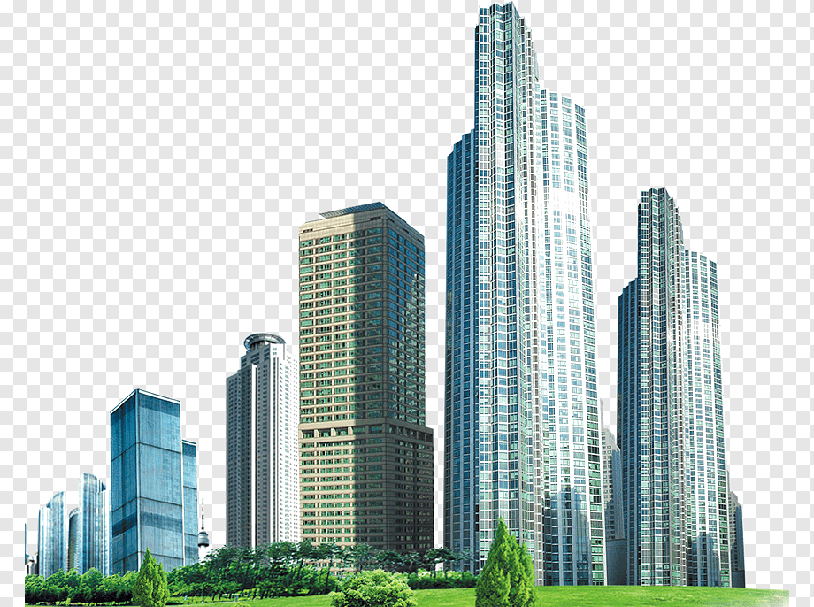
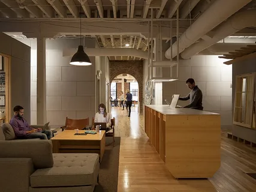
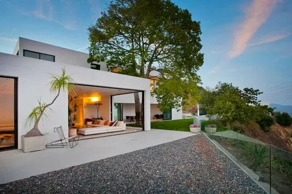
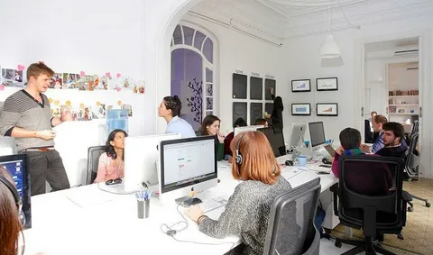
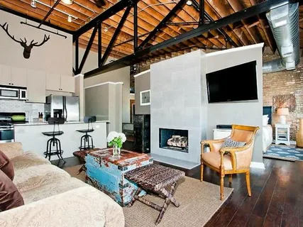

Repetition
4U Construction Firm
QUALITY
OVER
QUANTITY
contractorgorilla.com

Our Unique Approach
Building house is our aim because
once you are satisfied, we are satisfied too.
Repetition involves the consistent use of visual elements (like colors, fonts, or shapes) to create unity, consistency, and cohesiveness throughout a design. It helps establish a sense of rhythm and reinforces the visual identity of a brand or interface.
Rule of thirds
4U Airbnb
The best place for which
you have been looking!
airbnb.com

WHERE
| Anywhere |
|---|
CHECK-IN CHECKOUT
| Mon, Jan 29 | Tue, Jan 30 |
|---|
GUESTS
| 2 guests |
|---|
Search
Explore Airbnb
  The Rule of Thirds is a guideline used in visual arts, photography, and design that divides an image into nine equal parts using two horizontal and two vertical lines. Key elements of the composition are placed along these lines or at their intersections to create a visually balanced and interesting layout.
Contrast
MJP
ibm-institute.comYou can mange everyhing
where you are
Multinational technology and consulting company.
Offers a range of hardware, software, and cloud solutions.
Pioneers in AI, quantum computing, and enterprise solutions.
Contrast is the arrangement of opposite elements (light vs. dark, large vs. small, bold vs. regular) to create visual interest, emphasis, and hierarchy in a design.